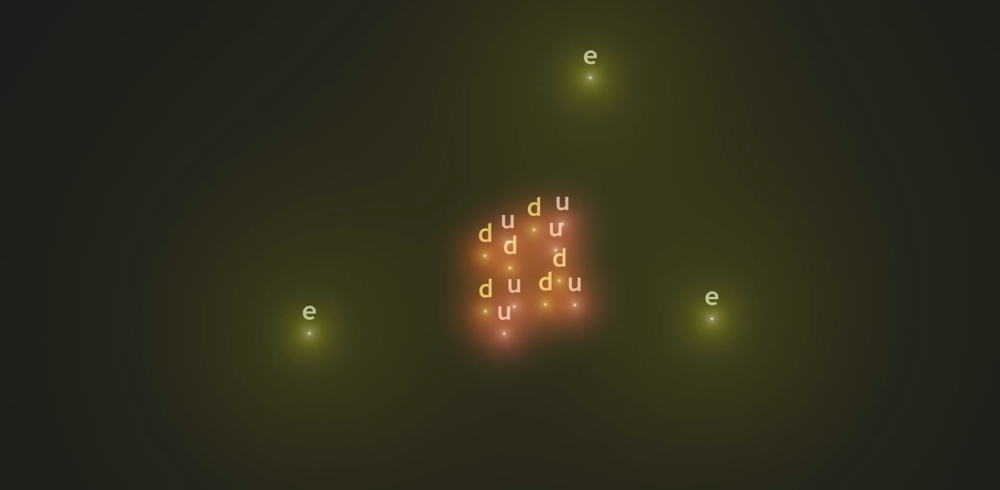
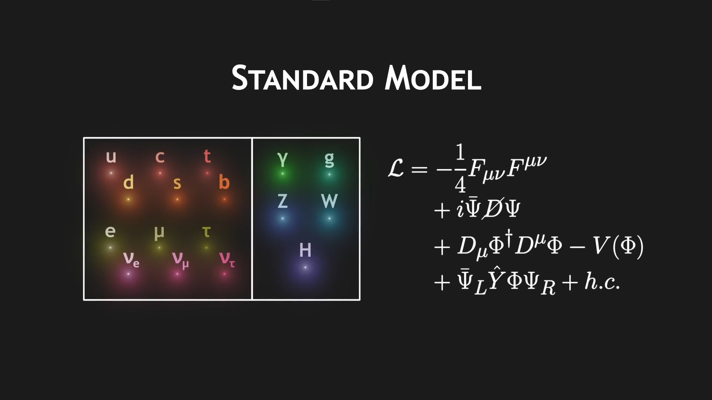
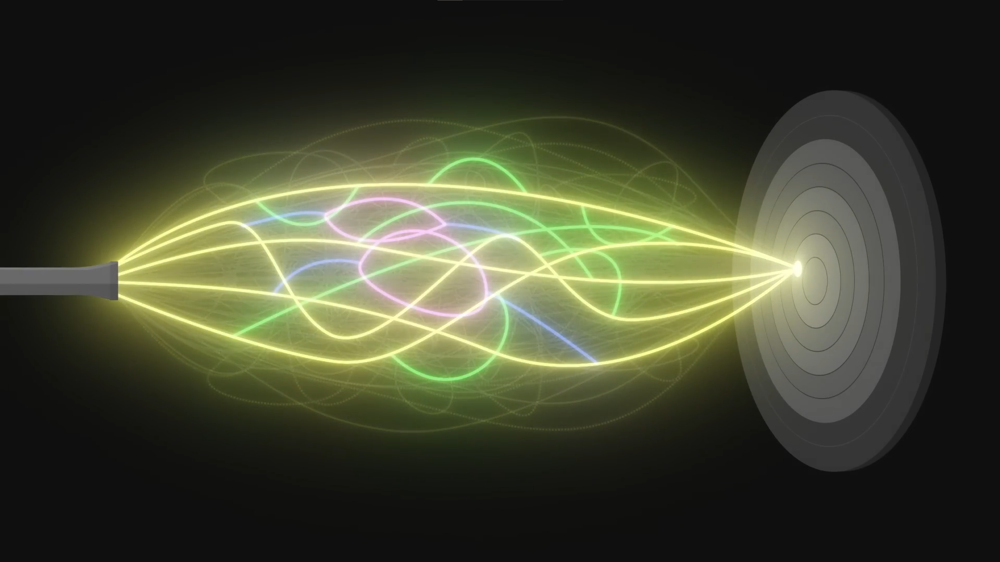
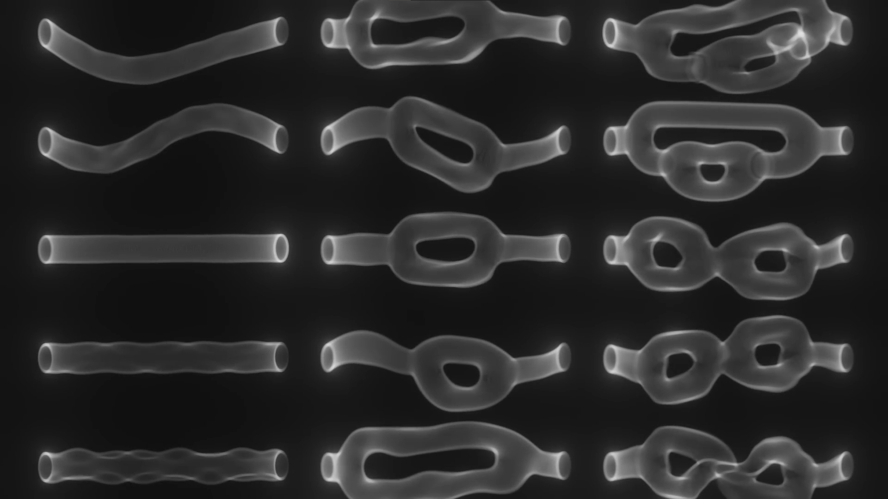
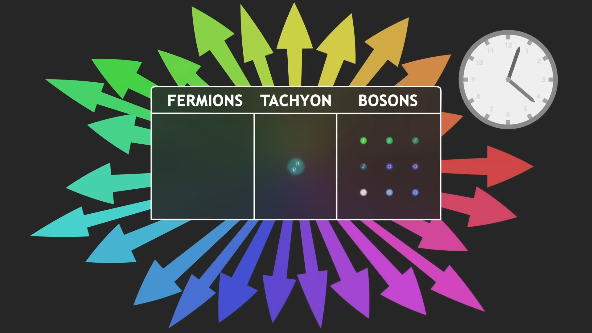
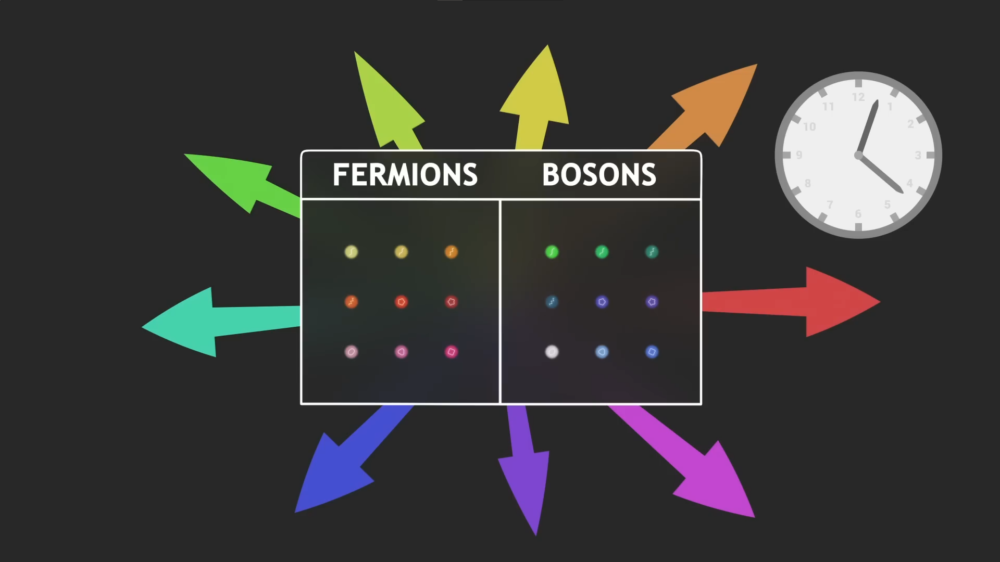
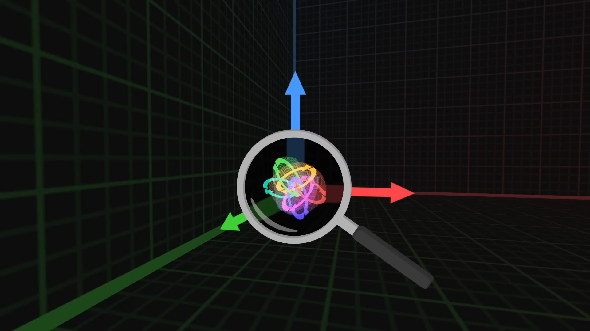
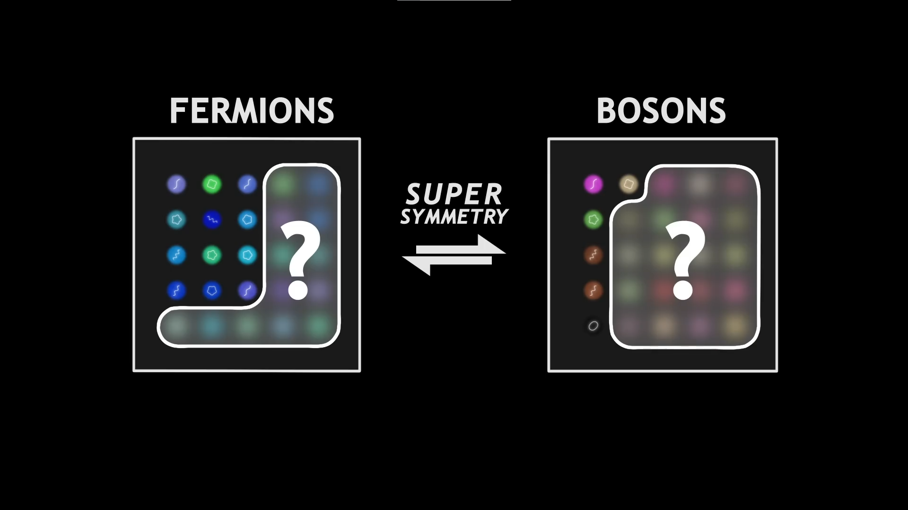

Մեր տիեզեերքը պարունակում է նյութեր որը երբ մենք նայեք ավելի մոտիկ կազմված է մասնիկներից, Կա տարբեր տեսակի մասնիկներ, Էլեկտրոներ, Քվարկեր կամ նեուտրինո․

Մասնիկները շարժվումեն տիեզերքում և կարող են Փոխազդել վիրտուալ մասնիկների փոխանակման միջոցով, Էլեկտրամագնիսական ուժը օրինակի համար միջնորդավորվում է Ֆոտոնի փոխազդման պատճարով․
Այս բոլոր մասնիկները խմբավորվածեն «Ստանդարտ մոդել | The Standard Model»

Այժմ ամենաճշգրիտ մաթեմատիկական բացատրությունն է Քվանտում աշխարհի: Ստանդարտ մոդելը պարունակում է Երկու կատեգորիա, Ֆերմիոներ և Բոզոներ։
Ֆերմիոները, որոնք հիմնականում կազմում են նյութ և Բոզոներ որոնք հիմնականում նկարագրում են փոխազդեցությունները
Սկզբից մեկը կմտածի որ սա է հստակ բացատրություննը, որ Ստանդարտ մոդելը բացատրում է ամեն ինչ․ Բայց կա մի հատել փոխազդեծություն, որը այս մոդելը բացատրել չի կարող, Գրավիտացիան։
Հսկայական սահմաներում մենք գիտենք որ գրավիտացիան բացատրվում է Հիմնական Հարաբերականությունով, տարածության ժամանակը ծռվում է զանգվածային առարկաներով և ձքումեն իրար, Նմանատիպ ուրիշ փոխազդեծությունների նման ծռված տարածություն ժամանակը բաղկածաց է մասնիկներից քուանտում չափին, Տարածության Ժամանակի Ծռության Քվանտ, «Գրավիտոն»
Բայց երբ մենք փորձումենք ներառել Գրավիտոնը մոդելի մեջ, մաթեմատիկական հաշվարկները տալիս են անհեթեթ արդյունքներ, մենք չենք կարող բացատրել գրավիտացիան Քուանտում չափի վրա․
Ստանդարտ մոդելում մասնիկները բացատրվումեն որպես փոքր անչափ կետ, Մենք ընդունում ենք, որ ոչ բոլոր կետերն ունեն նույն հատկությունները, հաշվի առնելով այն փաստը, որ կան տարբեր մասնիկներ
Լարերի տեսության մեջ, մենք կընդունենք որ սա ընդհամենը մոտավորեցում է և եթե Խոշորացնենք մասնիկները, այն բոլորը կազմված են փոքր լարից որոնք ունեն լարվածություն և կարող են թրթռալ
Գիթարի լարը կարող է թռթռալ տարբեր ձևով, նմանատիպ մեր լարերը կարող են թռթռալ տարբեր ձևերով, մեկ ալիք, երկու ալիք, երեք ալիք և այլն
Տարբեր թրթռման ձև վարվում է մեր չափում տարբեր տեսակի մասնիկների նման,երբ մենք կատարումենք հաշվարկներ, մենք նկատումենք որ որոշ լարեր իրենց պահում են ֆոտոնի պես և հայտնվեց լար որը բացատրում է Գրավիտոնը, բացատրելով գրավիտացիան քուանտում չափում։
այժմ մենք ուզում ենք հասկանալ, թե ինչպես են այս լարերը զարգանում տիեզերքի միջով
պատկերացնենք մենք թողնենք էլեկտրոն դեպի թիրախ, Էլեկտրոնը տարածվում է ալիքի պես, և երբ այն հասնի թիրախին, մենք չենք կարող վստահ լինել, թե որտեղ կլինի.
Քուանտում չափում նույն փորձը կարող է տալ տարբեր արդյունքներ
Մենք միայն կարող ենք գուշակել հնարավորությունը որևէ արդյունքի, Այց չափում Ֆիզիկան փորձում է գուշակել այս հնարավորությունները։
Ֆիզիկան փորձում է գուշակել այս հնարավորությունները։ Հավանական արդյունքի դիտարկման մաթեմատիկական մոտեցումը, միաժամանակ դիտարկել բոլոր հնարավոր սցենարները, որոնք հանգեցնում են դրան, մենք ամփոփում ենք բոլոր հետագծերը, բայց նաև բոլոր հնարավոր փոխազդեցությունները,
Օրինակ, Էլեկտրոնը կարող է արձակել Ֆոտոն և այնուհետև նորից կլանել այն կամ երկու Ֆոտոն կամել երեք

Բոլոր սցենարներում, որոնք մենք համարում ենք, մենք ձեռքով որոշում ենք թույլ տալ, որ այս կամ այն տեսակի փոխազդեցությունները վերարտադրեն այն, ինչ տեսնում ենք իրականում, և այս բոլոր սցենարներն ամփոփելով՝ մենք ստանում ենք ցանկալի հավանականությունը:
Լարերի տեսությն մեջ մասնիկները այլևս կետ չեն,
Կետը ժամանակի ընթացքում ցույց է տալիս հարթ հետագիծ, Բայց լարը գծում է մակերեսը, և բացատրել լարերի էվոլյուցիան հավանականական ձևով, ինչպես քվանտային ֆիզիկայում
մենք կդիտարկենք բոլոր հնարավոր երկրաչափությունները, որոնք կարող է գծել ժամանակի ընթացքում.
այն կարող է հետևել որոշակի հետագծով, որոշակի ձևով թրթռալ, բայց նաև կրկնօրինակել ինքն իրեն, որը նշանակում է արձակել մասնիկ, կամ վերամիավորվել, ինչը նշանակում է մասնիկ կլանել, ստեղծելով երկրաչափություն փոսով․
Ամփոփելով բոլոր հնարավոր երկրաչափությունները՝ լարերի տեսությունը ավտոմատ կերպով ներառում է փոխազդեցությունները, դրանք ձեռքով ավելացնելու կարիք չկա

Ի դեպ, ստանդարտ մոդելում փոխազդեցությունները տեղային էին, օրինակ, ֆոտոնի արտանետումը ակնթարթային էր, լարերի տեսության մեջ փոխազդեցություններն այժմ շարունակական են, մասնիկներն աստիճանաբար արտանետվում են, սա ազատվում է անհեթեթ արդյունքներից հաշվարկներում, երբ մենք փորձեցինք ներառել Գրավիտոնը:
Այս կերպ լարերի տեսությունը ոչ միայն կանխատեսում է Գրավիտոնի գոյությունը, այլև թույլ է տալիս մեզ հաշվարկել, թե ինչպես է այն փոխազդում այլ մասնիկների հետ և հետևաբար բացատրել քվանտային գրավիտացիան։
Այս պահին, ցավոք մոդելը ունի 3 խնդիր
1 - Բոլոր լարերը վարվումեն որպես Բոզոներ, օրինակի Ֆոտոն կամ Գրավիտոն այն կոչվում է որպես «բոզոնային լարերի տեսություն», մեր աշխարում նաև կան Ֆերմիոներ օրինակ Էլեկտրոներ, բայց մեր մոդելում այն չկան
2 - Մի մասնիկ հայտնվեց այս տեսության մեջ որը կոչվում է Թախյոն, իրա ղանգվածը երևակայական թիվ է, m = , սա խանգարող մաթեմատիկական խնդիր է
3 - Մեր տարածություն ժամանակը ունի 4 հարթություն, 3 տարածության հարթություն և 1 ժամանակ, Այս տեսությունը կարծես թե գործում է միայն 26 հարթություներով տիեզերքում, դժվարին թէ բացատրի մեր իրական աշխարը

Լուծելու համար այց խնդիրները պետք է միքիչ արաջ տանենք տեսությունը,
Որպեսզի մեր մոդելում լինեն Ֆերմիոներ, պետք է ավելացնեն «Սպինորներ» լարերի վրա, Սպինորը մաթեմատիկական բաղադրիչ է որը արդեն բացատրում է Ֆերմիոներ ստանդարտ մոդելում․
Ավելացնելով Սպինոր մենք արդեն լուծումենք 2 խնդիր․ Մոդելը հիմա ենթադրում է Ֆերմիոներ, և այլևս րկա Թախյոնը․ Այս ավելի Այս ավելի ամբողջական մոդելը
Սա է կոչվում «Գերլարերի տեսություն | SuperString Theory»
Ավելացնելով սպինոր մոդելը հիմա ունի հիմնարար համաչափություն Ֆերմիոների և Բոզոների միջև, այն ենթադրում է որ կլինի Այնքան Ֆերմիոներ ինչքան Բոզոներ․
Վերադարնանք 3րդ խնդիրին, սպինոր ավելացնելուց արաջ մոդելը մենակ աշխատում եր միայն 26 հարթություներով տիեզերքում, Հիմա մոդելին պետք է տիեզերք 10 հարթություներով
Այց երորդ խնդիրը դեր լուծվաց չէ, մոդելը չի համապատասխանում 4 հարթություների տիեզերքին

Եթե 10 հարթություներով տիեզերք գոյություն ունի, որտե՞ղ կլինեն մնացաց 6-ը
հնարավորություններից մեկն այն է, որ մյուս 6 հարտություները, որոնք մենք չենք նկատում, փլուզված են իրենց վրա
Հասկանալու համար պատկերացնենք։
Մրջյունը քայլում է ծղոտի վրա, ծղոտն ունի 2 հարթություն, մրջյունը կարող է քայլել ետ ու առաջ և ձախից աջ, բայց եթե բավականաչափ հեռանանք, կնկատենք 2 հարթությունների միայն 1ը, երկրորդը, որտեղ մրջյունը կարող է քայլել աջ ու ձախ. այնքան փոքր է, որ մենք չենք կարող տեսնել այս մասշտաբով:
Լարերի տեսության մեջ մենք կարող ենք ենթադրել նմանատիպ երևույթն
մեր տիեզերքը կունենա տարածության 9 հարթություներ, բայց դրանցից 6-ը շատ փոքր հարթություներ են փլուզվաց իրար վրա, որ մենք չենք կարող տեսնել դրանք մեր մասշտաբով, այս վարկածը մի փոքր հեռու է թվում, արդյոք խելամիտ է ենթադրել, որ գոյություն կունեն չափումներ, որոնք մենք չենք դիտարկում: շատ հետաքրքիր հարց է, որը հուշում է այնպիսի երևույթների, որոնք մենք կարող ենք դիտարկել

Օրինակ, մենք կարող ենք պատկերացնել անզանգված մասնիկը, որը շարժվում է լույսի արագությամբ, բայց մասամբ կոմպակտ հարթության ներսում, մեր տեսանկյունից մենք չենք տեսնում կոմպակտ չափը և, հետևաբար, մասնիկը մեզ ավելի դանդաղ է թվում, մենք դիտում ենք նրա ամբողջական շարժման միայն մի մասը: , կարծես թե դանդաղել է, ասես զանգված ունի
Լրացուցիչ կոմպակտ հարթություների գաղափարն այսպիսով առաջարկում է բավականին պարզ մեխանիզմ, որի միջոցով որոշ մասնիկներ կարող են մեծ զանգված դրսևորել.
Այնուամենայնիվ, ներկայումս չափազանց մեծ էներգիա կպահանջվի դրանք մեր մասնիկների արագացուցիչներում ստեղծելու համար, որպեսզի հաստատենք կամ չեղարկենք դրանց գոյությունը
Այս լրացուցիչ հարթություների առկայությունը նաև թույլ է տալիս թրթռման ռեժիմների շատ բազմազան տեսականի
Այսպիսով, պոտենցիալ նոր մասնիկների ավելի մեծ բազմազանություն, բացի այդ, հարթություները փլուզելու բազմաթիվ եղանակներ կան, և յուրաքանչյուր հնարավորություն կկանխատեսի տարբեր տիեզերք որտեղ լարերը կարող են ընդունել տարբեր թրթռման ռեժիմներ և հետևաբար վարվել տարբեր մասնիկների պես:
ուշադիր ընտրելով, թե ինչպես են այս 6 հարթություները փլուզված իրենց վրա, մենք կարող ենք հարմարեցնել մեր նկարագրությունն այնպես, որ այն կանխատեսի նույն մասնիկները, ինչ ստանդարտ մոդելում:
Դեռևս պարզ չէ, թե ինչու է մեր տիեզերքը պարունակում ստանդարտ մոդելի մասնիկներ, այլ ոչ թե որոշ այլ հնարավորություններ, ըստ որոշ դեռևս ենթադրական վարկածի, տիեզերքի երկրաչափությունը կարող էր տատանվել ժամանակի ընթացքում՝ անցնելով մի կոմպակտացումից մյուսը, և ֆիզիկայի օրենքները, հետևաբար, կարող էին ուրիշ լինել փոխվով մեր տիեզերքի առաջին ատյաններում
Լարերի տեսությունը դեռ մնում է սպեկուլյատիվ մոդել, որը շատ դժվար է փորձնականորեն փորձարկել, սակայն դա դեռևս շատ խոստումնալից մոդելը թույլ է տալիս նկարագրել գրավիտացիան քվանտային մասշտաբով և բացել դռները սև խոռոչների ուսումնասիրության համար, նրանք օգնեցին զարգացնել մաթեմատիկայի մի քանի ոլորտներ և ավելի լավ հասկանալ: ինքնին ստանդարտ մոդելից
լարերի տեսությունը նույնիսկ առաջարկում է մասնիկների հիպոթետիկ թեկնածու, ինչպիսիք են Axions-ը, որը կարող է բացատրել մութ նյութը
Այնուամենայնիվ, Լարերի տեսությունը մեծապես հիմնված է գերհամաչափության վրա, որը կոչված է կանխատեսել լրացուցիչ մասնիկներ, որոնք մենք դեռ չենք տեսել:

Գոյություն ունեն գերլարերի տեսության 5 տարբեր տիեզերք մոդել, որոնք նկարագրում են տիեզերքների տարբեր տեսակներ, մենք կարող ենք մաթեմատիկորեն ցույց տալ, որ այս 5 տիեզերքները միայն մեկ ավելի ամբողջական մոդելի մոտարկում են, որոնք նկարագրում են 11 հարտություներով տիեզերք: